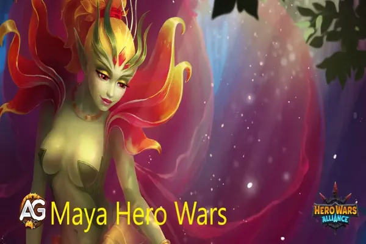
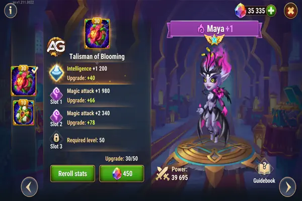
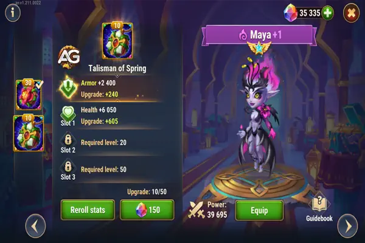

Descubra as melhores estratégias para usar Maya em Hero Wars Alliance, com composições de equipe versáteis para cura, suporte, dano mágico e controle do campo de batalha. Domine as habilidades de Maya e otimize suas equipes para a vitória.

Ilustração de Maya, personagem do jogo Hero Wars Alliance, desenvolvido pela Nexters.
Atributos Principais da Maya
Atributos Principais
Detalhes
Posição:
Linha Central
Função:
Cura, Mago
Atributo Principal:
Inteligência
Fação:
Mistério
Como obter Pedras de Alma:
Eventos, Baú Heroico, Loja da Torre
Maya Tier List 2024
Tier List
Classificação
Tier List Geral:
A+
Tier List de Hidra:
A+
Dominando Maya: Um Guia de Estratégia Abrangente
Maya, uma curandeira reverenciada nas batalhas de Hero Wars, possui um conjunto de habilidades único que a diferencia de seus colegas. Entre suas habilidades, há uma sinergia oculta, particularmente potente quando combinada com a habilidade Refluência de Dilúvio. Essa sinergia desbloqueia o potencial para Dilúvio desencadear doses duplas devastadoras de dano puro em seus inimigos, tornando esse combo uma força a ser reconhecida no campo de batalha.
Entendendo o Papel de Maya
Embora Maya se destaque na arte da cura, ela não supera nomes como Celeste, Martha e Dorian em termos de habilidades de cura bruta. No entanto, onde Maya realmente brilha é em sua capacidade de complementar tanques pesados na linha de frente e formar alianças formidáveis com heróis mais recentes como Iris e Cascade. Sua versatilidade permite que ela se adapte a várias composições de equipe, tornando-a um ativo valioso em qualquer formação.
Desencadeando o Poder de Maya
O arsenal de Maya está repleto de habilidades projetadas para perturbar e dizimar seus inimigos. Vamos explorar cada uma de suas habilidades:
Rainha das Flores: A flor mágica de Maya fornece um escudo protetor, restaurando a saúde de todos os companheiros ao longo do tempo. A resiliência da flor é fortalecida pelo ataque mágico de Maya, tornando-a uma barreira formidável contra ataques recebidos.
Pólen Envenenado: Com esta habilidade, Maya mira no inimigo mais distante, infligindo a eles pólen envenenado que causa dano ao longo do tempo. Essa produção de dano puro, baseada no ataque mágico de Maya, garante uma drenagem constante na saúde de seus inimigos.
Ligação Venenosa: Maya enlaça seus inimigos com brotos vivos, puxando-os juntos e envenenando-os no processo. Essa habilidade não apenas imobiliza os inimigos, mas também inflige um significativo dano puro ao longo do tempo.
Vingança da Rainha: Quando a flor mágica de Maya encontra seu fim, suas raízes aprisionam os inimigos próximos, imobilizando-os e causando dano contínuo. Este ato final de retaliação garante que os inimigos de Maya paguem o preço final por sua agressão.
Elaborando uma Estratégia Vencedora
Para aproveitar ao máximo o potencial de Maya, é necessário abordar as batalhas com uma mentalidade estratégica. Aqui estão algumas dicas para maximizar a eficácia de Maya no campo de batalha:
Sinergize com Heróis de Dilúvio: A sinergia de Maya com o herói Dilúvio é sua maior força. Combine-a com heróis como Dilúvio para amplificar sua produção de dano e criar combos devastadores.
Alveje Heróis da Eternidade: A sinergia Refluência de Cascade com Maya fornece proteção extra contra heróis da Eternidade com Octavia. O espelho de Octavia não pode refletir dano puro, pois não é possível se esquivar desse tipo de dano. Concentre-se em alvejar esses adversários para alavancar o potencial completo de Maya e garantir a vitória.
Proteja Maya: A eficácia de Maya depende de sua sobrevivência. Posicione-a estrategicamente atrás de tanques ou outros heróis protetores para garantir que ela possa usar suas habilidades sem medo de interrupções.
Invista em Maya: Dada a habilidade de Maya contra Hidras e sua versatilidade geral, investir em seu desenvolvimento pode render recompensas significativas. Aloque recursos para aprimorar suas habilidades e melhorar seu desempenho geral no campo de batalha.
Força no Campo de Batalha
Maya se destaca como uma força formidável no campo de batalha, capaz de mudar o curso da batalha com suas habilidades de cura e dano puro. Dominando suas habilidades e implementando uma abordagem estratégica, os jogadores podem desbloquear o potencial total de Maya e liderar sua equipe para a vitória em qualquer encontro.
Guia de Talismãs da Maya
Maya, uma poderosa heroína de dano puro em Hero Wars Alliance, se beneficia enormemente de seus Talismãs. Cada um de seus Talismãs melhora suas habilidades de diferentes maneiras. Vamos analisar ambos os Talismãs e como eles afetam seu desempenho em batalha.
Talisma do Florescimento
O Talisma do Florescimento foca em melhorar o ataque mágico de Maya, particularmente aumentando seu ataque mágico e inteligência. Isso torna seu contra-ataque, usando o dano puro das flores, muito mais agressivo contra heróis inimigos da linha do meio e retaguarda. Com uma defesa mágica mais forte, ela se torna mais resistente, enquanto seu ataque mágico aumentado a ajuda a causar grandes danos.
Tabela: Atributos do Talismã do Florescimento
Slot
Estatísticas
Pontos
0
Inteligência
+2.000
1
Ataque Mágico
+6.600
2
Ataque Mágico
+6.600
3
Ataque Mágico
+6.600

Maya com o Talisma do Florescimento, Hero Wars Alliance.
Este Talismã é altamente recomendado para melhorar o potencial ofensivo de Maya, permitindo que ela cause grandes danos com suas habilidades de dano puro e sobrepuje os oponentes em posições-chave.
Talisma da Primavera
O Talisma da Primavera, por outro lado, é projetado para aumentar a sobrevivência de Maya. Ele se concentra em aumentar sua armadura e saúde, o que lhe proporciona mais durabilidade e a ajuda a resistir a ataques pesados. Se você deseja que Maya dure mais em batalha e resista ao dano recebido, este Talismã é essencial.
Tabela: Atributos do Talismã da Primavera
Slot
Estatísticas
Pontos
0
Armadura
+12.000
1
Saúde
+60.500
2
Saúde
+60.500
3
Saúde
+60.500

Maya com o Talisma da Primavera, Hero Wars Alliance.
Este Talismã é ideal para jogadores que preferem priorizar a defesa, garantindo que Maya não morra rapidamente e possa continuar apoiando sua equipe em batalhas mais longas.
Qual Talismã de Maya Escolher?
O Talisma do Florescimento é, de forma geral, mais adequado para estratégias ofensivas e defensivas, pois melhora tanto o ataque quanto a defesa mágica de Maya. O Talisma da Primavera é mais focado na defesa, proporcionando uma forte sobrevivência para Maya em lutas mais difíceis. Dependendo do seu estilo de jogo, escolha aquele que melhor se encaixa no papel de Maya em sua equipe.
Pontos Positivos e Negativos
Pontos Positivos
Dano Puro
Curandeira
Artefato de Defesa mágica
Bastante ataque magico
Não depende de perfuração mágica
Pontos Negativos
Cura pouco
Se Posiciona muito na linha de frente
Pouca Armadura
Fraco contra times de ataque físico
Prioridade de Evolução de Estatísticas da Maya
Prioridade de Glifos
Prioridade de Glifos da Maya
#
Atributo
Prioridade
1
Ataque Mágico
Alta
2
Inteligência
Alta
3
Vida
Média
4
Armadura
Baixa
5
Defesa Mágica
Baixa
Prioridade de Artefatos
Prioridade de Artefatos da Maya
#
Artefato
Prioridade
1
Livro
Alta
2
Anel
Média
3
Arma (Defesa Mágica)
Baixa
Prioridade de Skins
Prioridade de Skins da Maya
#
Skin
Prioridade
1
Vida
Alta
2
Ataque Mágico
Alta
3
Ataque Mágico
Alta
4
Inteligência
Média
5
Defesa Mágica
Baixa
Maya com Visual Demoníaco, Hero Wars Mobile.
Maya vs Hidras
Maya é bastante usada em times de Hidra podendo ajudar o time com cura e causando bastante dano puro nas hidras.
Sugestão de equipe de Maya para Hidra da Luz: Alvanor, Maya, Nebula, Cornelius, Fox (Dano: 22M)
Dilúvio, Heidi, Nebula, Maya, Astaroth
- Esta equipe foca em dano sustentado e controle. Dilúvio fornece uma saída de dano consistente, Heidi perturba formações inimigas, Nebula aumenta o dano da equipe, Maya apoia com cura e dano mágico, e Astaroth atua como um tanque e fornece proteção.
Dilúvio, Amira, Nebula, Maya, Astaroth
- Esta configuração enfatiza dano mágico e controle. Amira aumenta o dano mágico, Nebula aumenta o dano da equipe, Maya cura e causa dano mágico, enquanto Astaroth protege a equipe.
Dilúvio, Jorgen, Heidi, Maya, Astaroth
- Uma equipe bem equilibrada com controle e sustentação. Jorgen perturba habilidades inimigas, Heidi controla formações inimigas, Maya cura e causa dano mágico, enquanto Astaroth atua como um tanque e protetor.
SemRosto, Dilúvio, Amira, Maya, Astaroth
- Esta equipe gira em torno de dano explosivo e disruptura. SemRosto perturba formações inimigas, Dilúvio e Amira causam dano, Maya fornece cura e dano mágico, e Astaroth protege a equipe.
SemRosto, Dilúvio, Maya, Satori, Astaroth
- Uma equipe focada em dano explosivo com marcas. SemRosto perturba inimigos, Dilúvio causa dano, Maya fornece cura e dano mágico, Satori causa dano com marcas nos inimigos, e Astaroth protege a equipe.
Dilúvio, Amira, Maya, Satori, Astaroth
- Uma equipe agressiva com dano sustentado e anti-cura. Dilúvio e Amira causam dano, Maya fornece cura e dano mágico, Satori enfraquece a cura inimiga, e Astaroth protege a equipe.
Dilúvio, Heidi, Maya, Satori, Astaroth
- Uma equipe com capacidades de controle com dano puro e mágico. Dilúvio e Heidi controlam formações inimigas, Maya cura e causa dano mágico, Satori causa dano com marcas, e Astaroth fornece proteção.
Martha, Jorgen, Maya, Satori, Astaroth
- Uma equipe com capacidade de controle e velocidade. Jorgen controla as formações inimigas, Martha cura e acelera a equipe, Maya cura e causa dano mágico. Satori causa dano mágico e Astaroth fornece proteção.
Jorgen, Celeste, Maya, Satori, Astaroth
- Uma equipe estratégica com foco em controle e anticura. Jorgen interrompe as habilidades do inimigo, Celeste fornece cura e enfraquece a cura do inimigo, Maya cura e Satori causa dano mágico, Astaroth protege a equipe.
Conclusão do Guia da Maya
Este guia das melhores estratégias para utilizar Maya em Hero Wars Alliance oferece uma visão abrangente das várias composições de equipe que podem ser eficazes em diferentes situações de batalha. Maya, como uma personagem versátil, pode desempenhar vários papéis, desde cura e suporte até causar dano mágico e controlar o campo de batalha.
Ao seguir as sugestões apresentadas neste guia, os jogadores podem otimizar suas equipes para obter o máximo de eficácia em combate. No entanto, é importante lembrar que a adaptabilidade é essencial; cada batalha pode exigir ajustes nas estratégias de equipe conforme os desafios específicos enfrentados.
Experimente diferentes combinações de heróis e refine suas táticas com base nas circunstâncias do jogo e nas características dos adversários. Com prática e compreensão das interações entre os heróis, os jogadores podem dominar o uso de Maya e alcançar grande sucesso em Hero Wars Alliance.
Você gostou do nosso Guia da Maya? Há algo que não entendeu ou gostaria de sugerir mudanças? Convidamos você a se juntar à nossa sessão de comentários na página do Alexandre Games Blog. Não hesite em expressar sua opinião, clarificar suas dúvidas e compartilhar sua sugestões. Clique no botão abaixo para começar:

 Dilúvio
Dilúvio Jorgen
Jorgen Satori
Satori